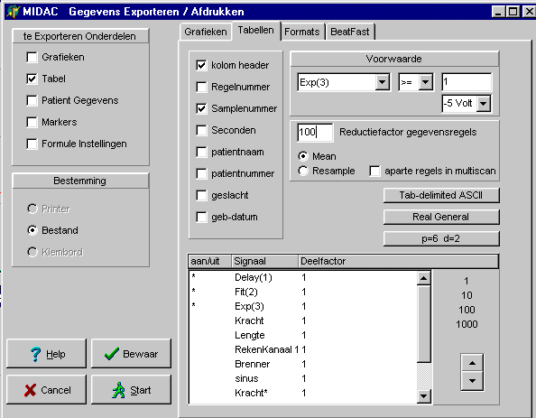

RF 2, Onset Systolische Bloeddruk
|
Deze functie berekent en tekent een exponentiële fit aan een opgenomen of berekend signaal.
De functie is speciaal ontwikkeld t.b.v. Ktr meting in functie 65.
Het is niet aan te bevelen deze functie te gebruiken tijdens het maken van een opname, gebruik de functie dus alleen tijdens bekijken en export van de opname.
Met behulp van de "Begin Marker" wordt in het oorspronkelijke signaal aangegeven, wanneer de curve fitting moet starten. Het einde van de fit kan worden aangegeven door de "Eind Marker" of door het tijdsinterval "RegressieTijd". De eerst optredende gebeurtenis zal de fit-berekening stoppen en zal het displayen van de fit tezamen met het oorsponkelijk (in tijd verschoven) signaal starten.
Het tekenen van de gefitte curve kan een grotere tijdspanne bedragen dan de berekening van de fit, dit teneinde ook bij een berekening over een klein stukje van de e-macht toch een goede visuele vergelijking tussen gemeten en berekende curve te maken.
BELANGRIJK: voor een goede weergave (en export) van het gemeten signaal gelijktijdig met het gefitte signaal, is het van belang dat de "pre-display-rekentijd" NUL is (zie protocol / ontwerp / algemeen / "het aantal seconden dat moet worden gerekend..")
Voordat de berekening wordt uitgevoerd, wordt het signaal met een laagdoorlaat / notch filter gefilterd op 50 Hz. Het vertraagde ingangssignaal heeft deze filtering ook ondergaan. De parameter "afgeleide" is een interne rekenparameter (zie hieronder) en kan men het best op de waarde 3 laten staan.
Hieronder is het effect te zien van de lengte waarover de regressie wordt berekend.
Voor deze analyse is gebruik gemaakt van opname 16 van 08-02-2002.
Merk op dat het verschil in de exponentiële coëfficiënt tussen een regressie berekening over 0.5 sec en 4 seconde bijna een FACTOR 2 bedraagt. Vermoedelijk speelt er dus nog een tweed orde effect een rol. Zou dit te maken kunnen hebben met het extra overstrechen dat tijdens de Ktr meting wordt uitgevoerd ??
|
|
|
|
|
Deze functie berekent en tekent een fit middels een exponentiele functie door een deel van de opname.
Deze functie kan in zijn algemeenheid worden geschreven als
(1) y = A + B * exp ( C * x + D)
De meest belangrijke parameter in deze functie is in het algemeen de coëfficiënt C.
De coëfficiënt D kan worden opgenomen in de coëfficiënt B, men dient zich echter bewust te zijn van deze coëfficiënt omdat in de praktijk (door inschakelverschijnselen) in het algemeen de curve niet van het tijdstip t=0 kan worden getekend.
Om de parameters op een directe manier (d.w.z. zonder iteratie) te kunnen bepalen (b.v. via de kleinste kwadraten methoden) moet de functie eerst gelineariseerd worden (of op zijn minst worden geschreven als een polynoom van x, waarbij x in het algemeen de tijd voorstelt). Dit is vanwege de offset A niet direct mogelijk, tenzij de exponentiële functie als een polynoom geschreven wordt. Omdat echter parameter C de meest interessante parameter is, is het verstandiger om de afrondingen ergens anders neer te leggen. Daarom wordt toch gekozen voor linearisatie. Hiertoe wordt eerst de afgeleide van de functie bepaald:
(2) dy / dx = B * C * exp ( C * x )
Deze functie is wel eenvoudig te lineairiseren, door de (natuurlijke) logaritme te nemen:
(3) ln ( dy / dx ) = ln ( B * C ) + C * x
oftewel
(4) Y = B0 + B1 * X
Uitgaande dat men meetpunten heeft die naar verwachting voldoen aan vergelijking (4), kan men de coëfficiënten B0 en B1 direct berekenen met de volgende formules:
(5) B0 = ( 2 * ( 2 * N + 1 ) * sum( Yi) - 6 * sum(n*Yi)) / ( N * ( N-1))
(6) B1 = (12 * sum(n*Yi) - 6 * ( N + 1 ) * sum(Yi)) / ( h * N * ( N - 1 ) * ( N + 1 ))
In feite heeft is hier het gewenste resultaat reeds bereikt, immers
(7) C = B1
(8) B0 = ln ( B * C ) , hetgeen leidt tot B = ( 1 / C ) * exp ( B0 ) = ( 1 / B1 ) * exp ( B0 )
Alleen de parameter A (verschuiving van de grafiek) is nu nog onbepaald. Deze is van geen belang, anders dan dat deze af en toe gebruikt wordt om gemeten en berekende curve in 1 grafiek met elkaar te vergelijken. A kan nu rechtstreeks worden berekend met de volgende formule:
(9) A = ( sum ( y ) - sum ( B * exp ( C * x ) ) ) / N
Het bepalen van de afgeleide gebeurt volgens de "average sloop methode", waarbij het aantal punten waarover deze berekening plaats vindt kan worden ingesteld met de parameter "afgeleide". Aangezien het signaal zal zwaar gefilterd wordt, is een een waarde van 3 ruim voldoende.
1 = ingangssignaal waarover de e-macht moet worden gefit. Hiervoor kan het beste het ruwe ongefilterde signaal worden genomen, omdat deze een iets hogere exponentiele coëfficiënt geeft, hetgeen te verklaren is uit de laagdoorlaat filtering (is trager maken) van het signaal.
1 = vertraagde (en gefilterde) ingangssignaal, dat gebruikt kan worden om de berekende fit visueel te vergelijken.
2 = gesimuleerde curve op basis van de berekende (gefitte) parameters
3 = exponentiële coëfficiënt C [1/sec]
De signalen 1 en 2 behoren dezelfde kallibratie als het ingangssignaal te hebben.
Het signaal 3 behoort de kallibratie 0 / -5 / -4.095 / 5 te hebben
Hieronder is het resultaat van 3 opeenvolgende Ktr metingen te zien
Hieronder zijn de gebruikte export instellingen afgedrukt.

en het resultaat gezien vanuit Excel
© Copyright Instrumentele Dienst
SM/GvV, 30-05-2002